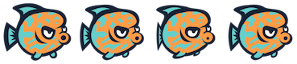
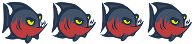
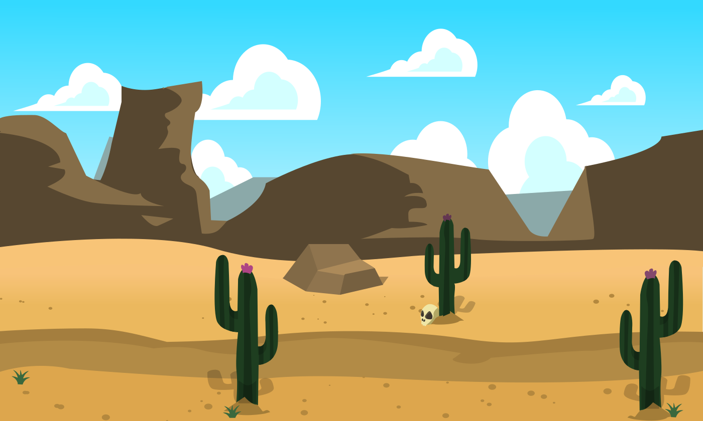
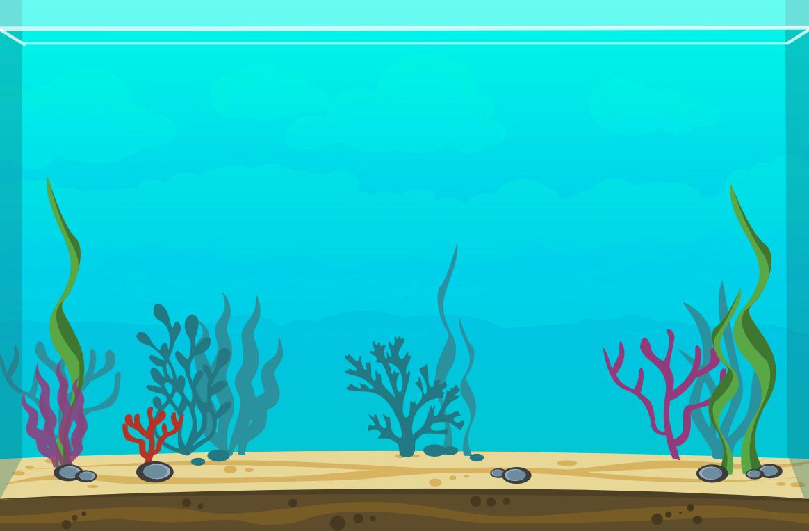
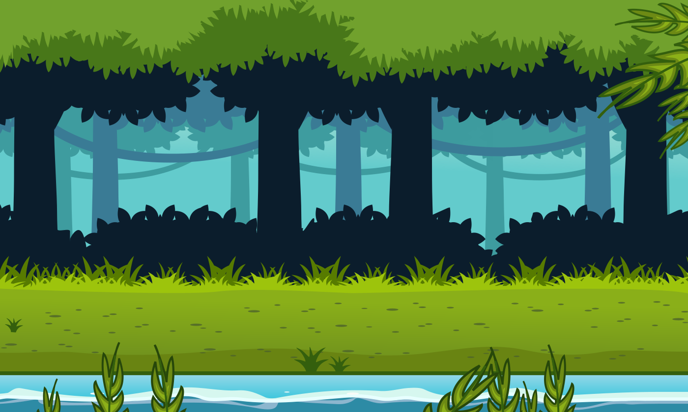
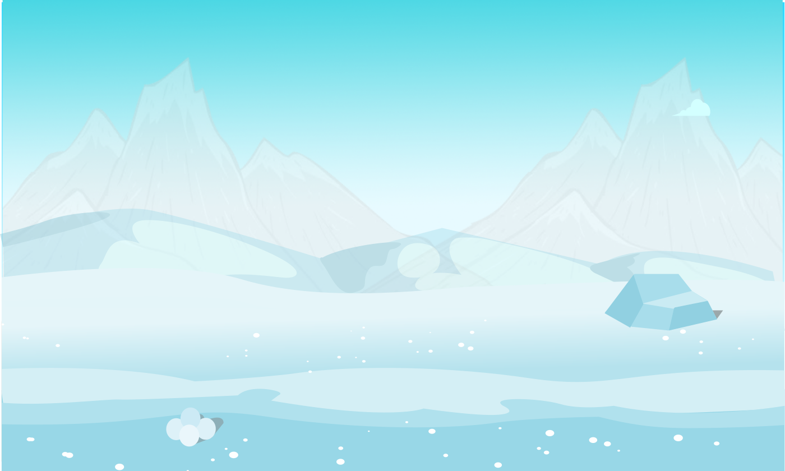
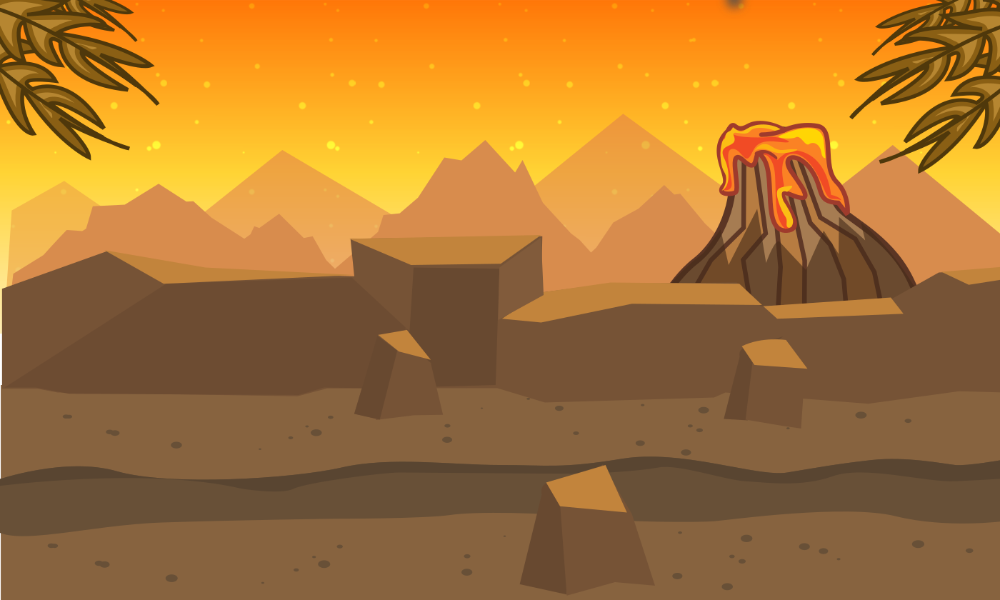

7.4
tidey-assets
| (require tidey-assets) | package: tidey-assets |
Assets by Andrew Tidey – https://mrartrobot.blogspot.com/
1 Characters
value
ghostfish-sheet : image?
Ghostfish Sheet Image

Original Artist Credit: Andrew Tidey. See: Here. Animations by Sara, for ThoughtSTEM.
value
greenfish-sheet : image?
Greenfish Sheet Image
Original Artist Credit: Andrew Tidey. See: Here. Animations by Sara, for ThoughtSTEM.
value
jellyfish-sheet : image?
Jellyfish Sheet Image

Original Artist Credit: Andrew Tidey. See: Here
value
orangefish-sheet : image?
Orangefish Sheet Image

Original Artist Credit: Andrew Tidey. See: Here. Animations by Sara, for ThoughtSTEM.
value
redfish-sheet : image?
Redfish Sheet Image

Original Artist Credit: Andrew Tidey. See: Here. Animations by Sara, for ThoughtSTEM.
value
yellowfish-sheet : image?
Yellowfish Sheet Image
Original Artist Credit: Andrew Tidey. See: Here. Animations by Sara, for ThoughtSTEM.
2 Coins
value
coin-gold : image?
Coin Gold Image
Original Artist Credit: Andrew Tidey. See: Here
value
coin-silver : image?
Coin Silver Image
Original Artist Credit: Andrew Tidey. See: Here
value
diamond : image?
Diamond Image
Original Artist Credit: Andrew Tidey. See: Here
value
star : image?
Star Image
Original Artist Credit: Andrew Tidey. See: Here
3 Backgrounds
value
desert-bg : image?
Desert Bg Image

Original Artist Credit: Andrew Tidey. See: Here
value
fishtank-bg : image?
Fishtank Bg Image

Original Artist Credit: Andrew Tidey. See: Here
value
jungle-bg : image?
Jungle Bg Image

Original Artist Credit: Andrew Tidey. See: Here
value
snow-bg : image?
Snow Bg Image

Original Artist Credit: Andrew Tidey. See: Here
value
volcano-bg : image?
Volcano Bg Image

Original Artist Credit: Andrew Tidey. See: Here